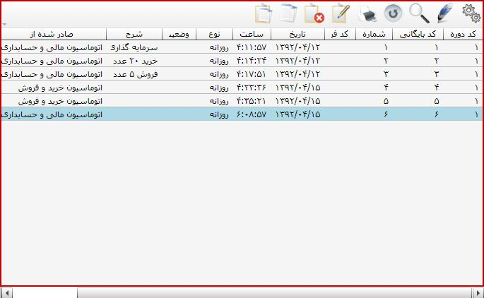
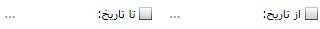
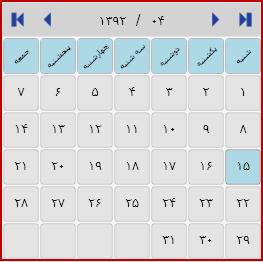

صفحه بایگانی و مدیریت اسناد حسابداری که در شکل بالا مشخص است دارای سه قسمت است که هر یک را توضیح می دهیم:
همانطور که در شکل بالا مشاهده می کنید در این قسمت لیست اسناد حسابداری صادر شده در سیستم قرار دارد که در این لیست اطلاعات مربوط به اسناد از قبیل: کد دوره، کد بایگانی، شماره، کد فرعی، تاریخ ثبت سند، ساعت ثبت سند، نوع سند، وضعیت تایید، شرح سند، صادر شده از و نام ایجاد کننده سند قرار دارد.

به کمک این قسمت از صفحه بایگانی و مدیریت اسناد می توانید لیست اسناد حسابداری را فیلتر کنید. در ادامه کاربرد هر یک از اجزای شکل بالا توضیح داده شده است.

اگر دوره های مالی مختلف داشته باشید می توانید با انتخاب دوره مالی مورد نظر از این قسمت لیست اسناد صادر شده در آن دوره را مشاهده کنید.
برای آن که بتوانید فقط اسناد صادر شده در یک بازه زمانی خاصی را مشاهده کنید از این قسمت روی مربع ها کلیک کنید سپس بازه تاریخی خود را انتخاب کنید تا اسناد مربوط به بازه تاریخی نمایش داده شوند. برای تعیین تاریخ روی نقطه چین کلیک کنید تا صفحه زیر باز شود از این صفحه تاریخ مورد نظر را انتخاب کنید.

با استفاده از این قسمت تعیین می کنید که سیستم لیست کدام یک از انواع سندهای حسابداری را نشان دهد. البته با انتخاب همه اسناد می توانید همه ی اسنادی که در حسابداری صادر شده اند را مشاهده کنید.

با کلیک روی مربع مربوط به این گزینه سیستم اسناد را بر اساس وضعیت تایید آن ها نمایش می دهد، اگر«تایید شده» را انتخاب کنید اسنادی که تایید شده اند نشان داده می شوند و اگر«تایید نشده» را انتخاب کنید اسنادی که تایید نشده اند نشان داده می شوند.
قسمت آخری که از صفحه مدیریت و بایگانی اسناد توضیح می دهیم در شکل صفحه بعد نشان داده شده است همان طور که مشاهده می کنید به کمک کلید هایی که در این قسمت وجود دارند می توانید روی اسناد عملیات مختلفی را انجام دهید.

اگر سندی را از لیست اسناد حسابداری انتخاب کنید و روی این گزینه کلیک کنید، سند مورد نظر باز شده و می توانید فرم آن را مشاهده کنید.
در صورتی که خواستید تاریخچه مربوط به سندی را مشاهده کنید پس از انتخاب آن سند روی این گزینه کلیک کنید تا اطلاعات مربوط به آن سند را درشکل زیر مشاهده کنید.

به این ترتیب از لحظه ایجاد سند تا آخرین تغییرات در آن قابل مشاهده است.
 با کلیک روی این گزینه می توانید اسناد را بر حسب تاریخ صدورشان مرتب کنید. با کلیک روی این گزینه پیغام شکل زیر باز می شود که با تایید آن صفحه بعدی ظاهر می شود.
با کلیک روی این گزینه می توانید اسناد را بر حسب تاریخ صدورشان مرتب کنید. با کلیک روی این گزینه پیغام شکل زیر باز می شود که با تایید آن صفحه بعدی ظاهر می شود.


با وارد کردن بازه تاریخی و کلیک روی تایید اسناد مرتب می شوند.
برای ثبت نهایی اسناد حسابداری لازم است که اسناد صادر شده را تایید کنیم این کار را به کمک این گزینه انجام می دهیم. به این ترتیب که بعد از انتخاب سند یا اسنادی که می خواهیم تایید کنیم روی این گزینه کلیک می کنیم و اسناد با پیغام زیر تایید می شوند.

 می توان اسنادی را که قبلا تایید شده اند به کمک این گزینه از حالت تایید در آورد.
می توان اسنادی را که قبلا تایید شده اند به کمک این گزینه از حالت تایید در آورد.
 اداره دارایی برای تایید نرم افزار الزام می دارد که اسناد حسابداری از یک تاریخ معین به بعد قابل ویرایش و حذف کردن نباشند، لذا لازم است در زمان تعیین شده اسناد حسابداری صادر شده را تایید نهایی کنید. برای این کار روی کلید « تایید نهایی اسناد» کلیک کنید تا صفحه زیر باز شود:
اداره دارایی برای تایید نرم افزار الزام می دارد که اسناد حسابداری از یک تاریخ معین به بعد قابل ویرایش و حذف کردن نباشند، لذا لازم است در زمان تعیین شده اسناد حسابداری صادر شده را تایید نهایی کنید. برای این کار روی کلید « تایید نهایی اسناد» کلیک کنید تا صفحه زیر باز شود:

تایید نهایی اسناد بر حسب تاریخ صدور اسناد می باشد. شروع بازه تاریخی همیشه تاریخ اولین روز دوره مالی می باشد و تاریخ دوم نشان می دهد که اسناد تا چه تاریخی تایید نهایی می شوند. همچنین در تایید نهایی اسناد، بازه های تاریخی مشخص شده باید پیوسته باشند به طور مثال وقتی اسناد یک ماه اول دوره مالیتان را تایید نهایی کرده اید بار دیگر که می خواهید اسناد صادر شده در بازه تاریخی دیگری را تایید نهایی کنید شروع بازه تاریخی انتخابی باید اولین روز ماه دوم دوره مالیتان باشد.(همان طور که در شکل بالا مشاهده می کنید وقتی کلید تایید نهایی اسناد را انتخاب می کنید سیستم به طور پیش فرض کل دوره مالی را به عنوان بازه تاریخی در نظر می گیرد). پس از انتخاب بازه تاریخی روی کلید تایید کلیک کنید تا هشدار شکل زیر ظاهر شود

 توجه به هشدار بالا بسیار مهم است زیرا پس از تایید نهایی اسناد در بازه تاریخی مشخص شده، اسناد صادر شده در آن بازه دیگر قابل ویرایش و یا حذف شدن نیستند و همچنین در آن بازه تاریخی دیگر امکان ثبت سند جدید وجود ندارد. (به عنوان مثال اگر اسناد کل دوره مالی را تایید نهایی کنید دیگر در آن دوره هیچ سند حسابداری جدیدی را نمی توانید صادر کنید.) پس در تایید نهایی اسناد باید نهایت دقت را به عمل بیاورید. پس از کلیک روی گزینه « بله » اسناد بازه تاریخی مشخص پس از پیغام زیر تایید نهایی می شوند.
توجه به هشدار بالا بسیار مهم است زیرا پس از تایید نهایی اسناد در بازه تاریخی مشخص شده، اسناد صادر شده در آن بازه دیگر قابل ویرایش و یا حذف شدن نیستند و همچنین در آن بازه تاریخی دیگر امکان ثبت سند جدید وجود ندارد. (به عنوان مثال اگر اسناد کل دوره مالی را تایید نهایی کنید دیگر در آن دوره هیچ سند حسابداری جدیدی را نمی توانید صادر کنید.) پس در تایید نهایی اسناد باید نهایت دقت را به عمل بیاورید. پس از کلیک روی گزینه « بله » اسناد بازه تاریخی مشخص پس از پیغام زیر تایید نهایی می شوند.
شکل بالا در اثر تایید نهایی اسناد از تاریخ 01/01/1392 تا 15/04/1392 ظاهر شده است.